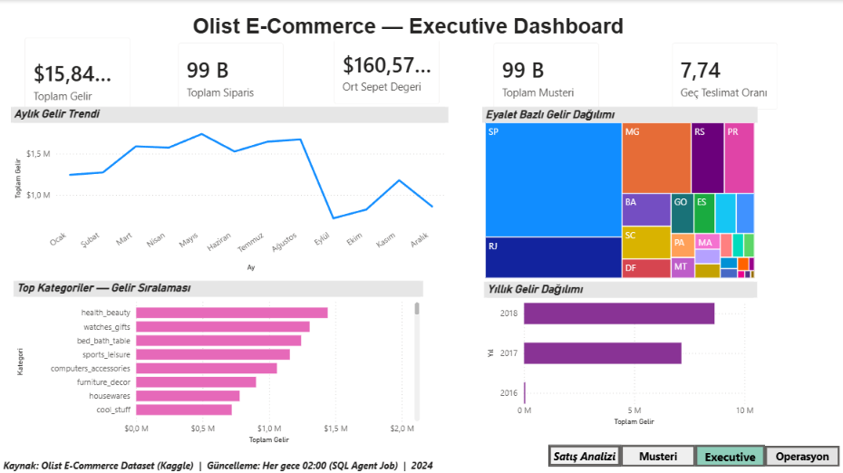
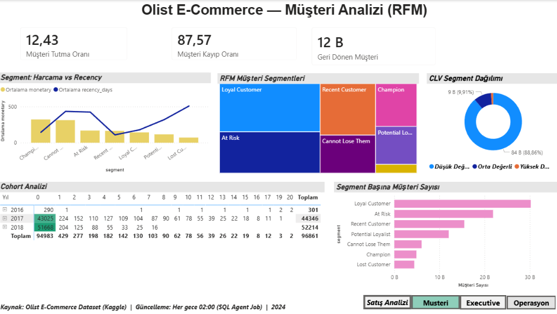
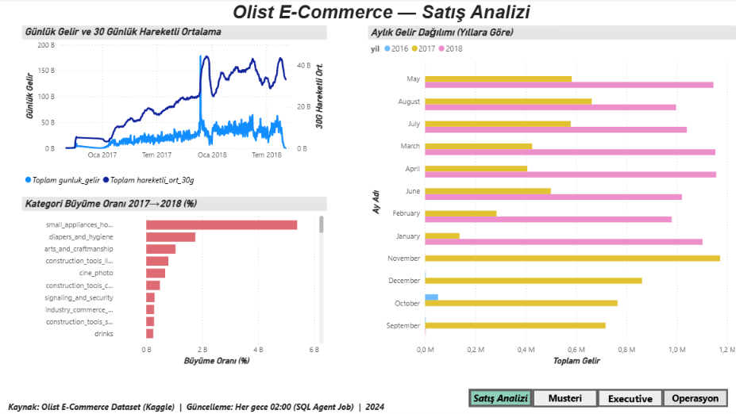
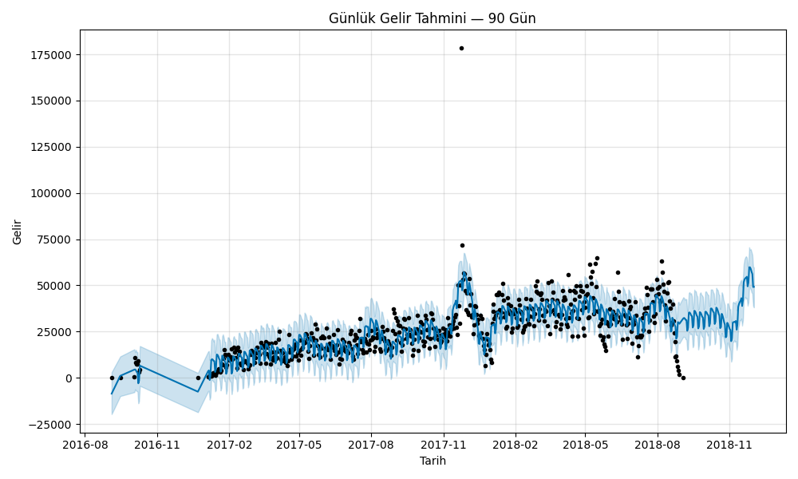

Completed · Personal project
Olist E-Commerce — End-to-End Data Analytics Platform
An end-to-end analytics build on Olist's public Brazilian e-commerce dataset — from raw CSVs to a star-schema warehouse to a four-page Power BI dashboard, closing with churn and revenue-forecasting models in Python.
112,101orders analyzed
$15.84Mrevenue tracked
4dashboard pages
8DAX measures
Problem / goal
Take unstructured order data and turn it into something reliable enough for executive reporting — with proper staging, a queryable warehouse, and dashboards that refresh on a schedule instead of a one-off spreadsheet.
What I did
- Loaded 9 source CSVs into a SQL Server staging database via SSIS (9 tables, 7 primary keys, 6 foreign keys, 5 indexes)
- Built a star-schema warehouse (Fact_Sales + 4 dimension tables) with an ETL log table and error handling, refreshed nightly via a SQL Agent job
- Wrote RFM segmentation, cohort/retention analysis and moving averages in T-SQL, exposed through a parameterized stored procedure
- Designed a 4-page Power BI dashboard (Executive, Customer, Operations, Sales)
- Added an XGBoost churn model and a 90-day Prophet revenue forecast in Python, written back into SQL Server
Key findings
- 7.74% of orders were delivered late; health_beauty is the top revenue category
- small_appliances was the fastest-growing category year over year
- 12.43% customer retention — flagged as a priority area in the dashboard narrative
Stack
Power BI file (.pbix) is included in the repository — no separate published dashboard link.



